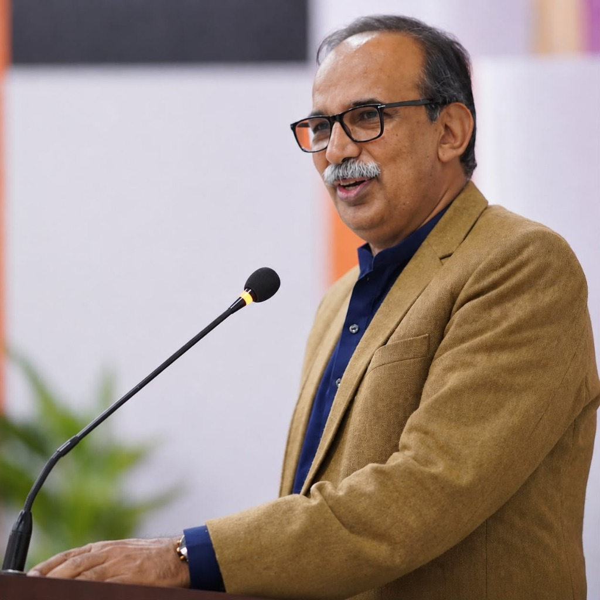

Executive Education · USA
University of Maryland
Studied “How to start a new Business” (United States of America)
About
Professional Trainer, Motivational Speaker, Development Activist, and Gender, Livelihood, Enterprise Development & Value Chain Expert enabling Pakistan's innovation economy and social movement.
Azam Malik began his career in journalism, contributing to Daily Jang, The Frontier Post, Daily Pakistan, and Khaleej Today. Over the last four decades, he translated media discourse into high-impact capacity building and development consultancy for United Nations Development Programme (UNDP), UNOPS, The Asia Foundation (TAF), SOS, National Rural Support Program (NRSP), Punjab Rural Support Program (PRSP), Benazir Income Support Program (BISP), ManTech & ARC, Human Resource Learning Centre (HRLC), Complete Human Resource Solutions (CHRS), Possibilities (Pvt.) Ltd., and ECI (Pvt.) Ltd. Islamabad.
He served as Lead Trainer & Coordinator of the Citizen’s Campaign for Women Representation (CCWR 2000 & 2005) with Aurat Foundation, Senior Trainer for Citizens Community Board Mobilization (CCBM) & CCB Project Cycle Management (PCM) with YCHR, CCHD & DTCE Islamabad, Research Analyst at the Women Political School (WPS) with Ministry of Women Development & UNDP, Lead Trainer for the Gender Based Governance Systems Project (GBG) across 7 districts of Punjab, and Training Coordinator (Punjab) & Lead Trainer for BISP's 10-day Waseela-E-Haq Enterprise Development trainings with ECI.
Currently, he is CEO of Kitab Publications (Pakistan's 1st Digital Publishers), Chairperson of Ejad Foundation, Founder & CEO of Consultancies (Pvt.) Ltd., Managing Director of Ejad Labs, Co-Founder of Future Fest, and Member Board of Governors at Accountability Lab Pakistan.

0
Decades building community capital
0
Media & policy collaborations
0
Flagship initiatives founded
∞
Commitment to progress
Academic & Professional Qualifications
Executive Education · USA
Studied “How to start a new Business” (United States of America)
Management Studies
MBA (Master of Business Administration)
Academic Distinction
Master of Arts (M.A.) Persian · President Punjabi Majlis
Specialized Certification
Studied Social Engineering for Participatory Development at National Institute of Social Engineering & GIS
Postgraduate & Research
MPhil Pakistani Languages (Allama Iqbal Open University) & M.A. Punjabi (University of Sargodha, Grade A)
Expertise
Azam fuses grassroots mobilization with board-level insight, enabling public, private, and development partners to launch human-centered programs.
Designing resilient programs for women, councilors, and youth across Pakistan.
Coaching startups, micro-entrepreneurs, and SMEs through BISP Waseela-E-Haq and Future Fest platforms.
Guiding civic leaders on social engineering, digital transformation, and participatory governance.
Pioneering digital publishing via Kitab Publications and amplifying narratives for social innovation.
Ventures & Roles
"I am driven by the willingness to learn and the urgency to share that knowledge with every citizen ready to build a better future."
Programs
South Asia's flagship innovation festival accelerating digital Pakistan.
Studios
Innovation studio enabling government, corporate, and startup alliances.
Movements
Nationwide mission delivering digital skills and policy advocacy.